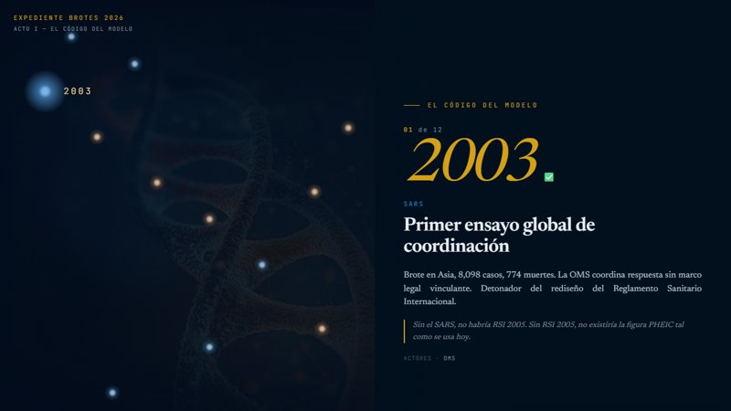
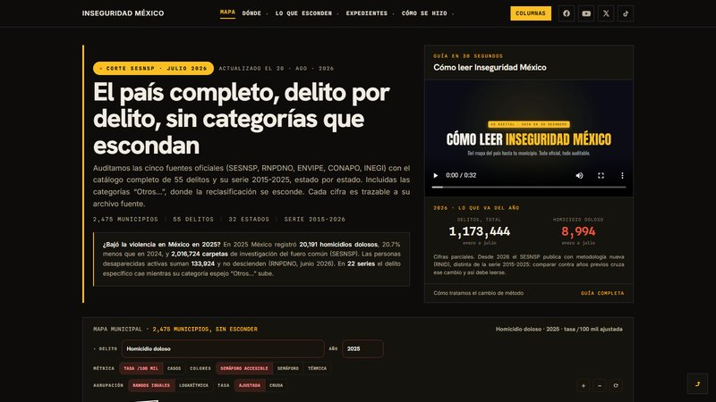
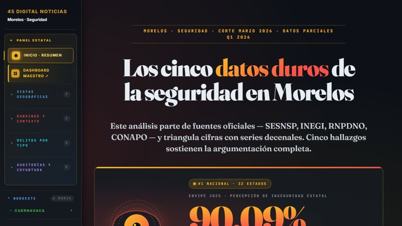

Casi un tercio de la nómina del agua de Cuautla se paga sin un solo nombre; y por fuera, 10.6 millones en "asesorías". La vieja tienda de raya, en una cuenta pública de 2025.
Cuautla debe 41 millones por una avenida que construyó hace quince años. La mitad de esa cifra es puro castigo por no haberla pagado, a razón de cerca de diez mil pesos cada día.
Una "cuenta puente" con 17.2 millones parados, compensada contra "ayudas sociales a personas", en un organismo que a la red del agua le dio 690 mil. La primera cuenta que una auditoría debería abrir.
Murió en noviembre de 2024 y en enero de 2026 seguía con 13.8 millones en el banco, pagando bodega y licencias de correo. No hay un solo trabajador esperando que le paguen. ¿Por qué sigue abierto?

Hantavirus y ébola como corredor del Mundial 2026: el mapa, los actores y la doctrina del shock.
Abrir el tablero
El país delito por delito: 55 delitos, 32 estados y 2,475 municipios, serie 2015-2026, con las cinco fuentes oficiales auditadas.
Abrir el tablero
Hub de datos de violencia y desapariciones por municipio: rankings, series y fichas de Cuautla, Cuernavaca, Ayala y más.
Abrir el tableroCada columna toma piezas que parecen no tener relación y las lee en su conjunto: quién gana, quién paga, qué se mueve detrás. Opinión fundada, fuentes citadas, lo verificable separado de la lectura. El lector siempre puede cotejar.
SRVOUsamos cookies de Google Analytics para medir la audiencia y mejorar el sitio. Puedes aceptarlas o rechazarlas. Más detalles en nuestro Aviso de privacidad.